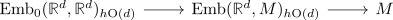
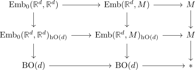

fiber sequence of homotopy orbits of the smooth embedding spaces
Proposition
Let $M$ be a smooth manifold. Then there exists a fiber sequence

Proof
using fibration sequence of the homotopy orbits we get a diagram

here the vertical maps are fiber sequences (by the above resp. trivial reasons)
Now the bottom horizontal map is again a fiber sequence for stupid reasons and the top sequence is one by definition.